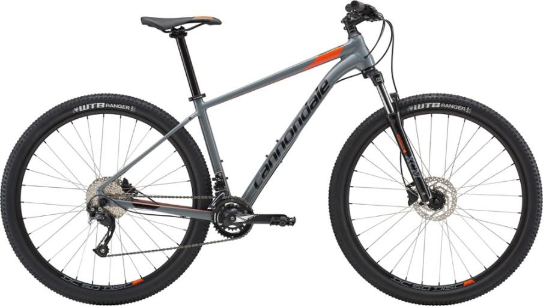
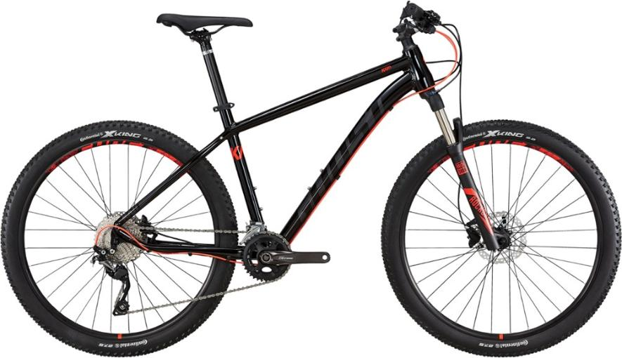
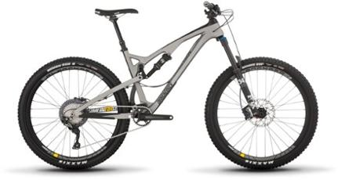

HIGH QUALITY MOUNTAIN BIKES

$700.00
- Aluminum alloy frame offers exceptional stiffness, durability and smoothness, striking a balance between race-level quickness and confidence-inspiring stability
- Shimano Altus drivetrain deftly moves through the 18 gears for smooth shifting
- Hydraulic disc brakes offer superb speed management
- Small frame sizes have 27.5 in. tires; Medium, Large and Extra-Large frames have 29 in. tires

$1,199.00
- Trusted geometry is balanced to offer high-quality riding characteristics in any situation
- Shimano Deore 36/26t crankset is paired with a 10-speed, 11-36t cassette, giving you 20 gears to tackle any trail; Deore drivetrain lets you shift quickly and precisely
- Alex TD 19 rims spin smoothly around Shimano hubs and are wrapped with Continental X-King 27.5 or 29 in. x 2.2 in. tires for great traction
- Small and Medium frame sizes have 27.5 in. tires; Large and Extra-Large frames have 29 in. tires

$3,000.00
- Light, stiff carbon monocoque frame with Boost 148x12mm Maxle dropout
- Shimano SLX 11-speed single-ring drivetrain provides consistent shifting and, thanks to its generous 46-tooth granny gear, makes short work of climbs you'd normally despise
- Fox Float DPS EVOL LV rear shock and Fox 34 Performance Float fork provide smooth bump-eating performance (150/130mm suspension travel, front and rear)
- KS LEV Si dropper post (with Southpaw remote lever) adds maneuverability on descents